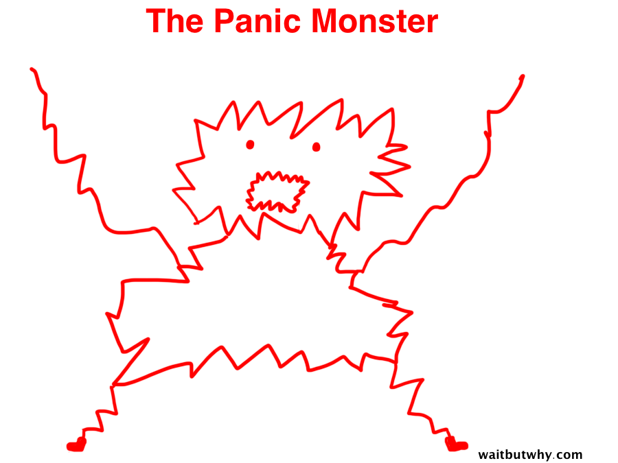
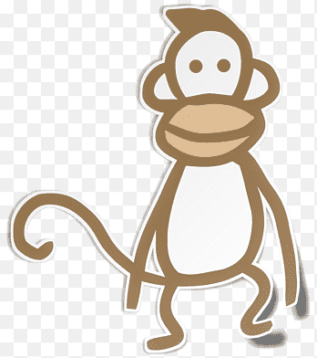
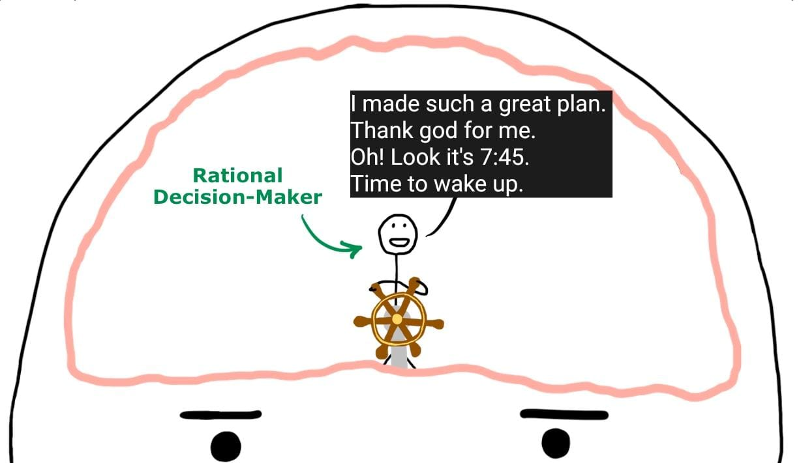
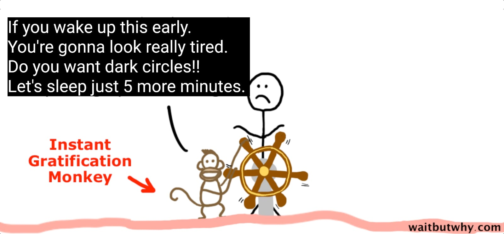
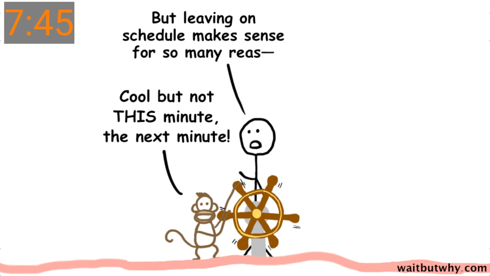
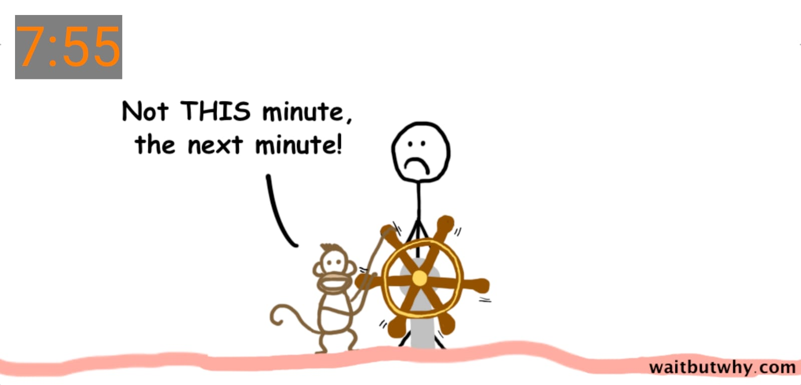
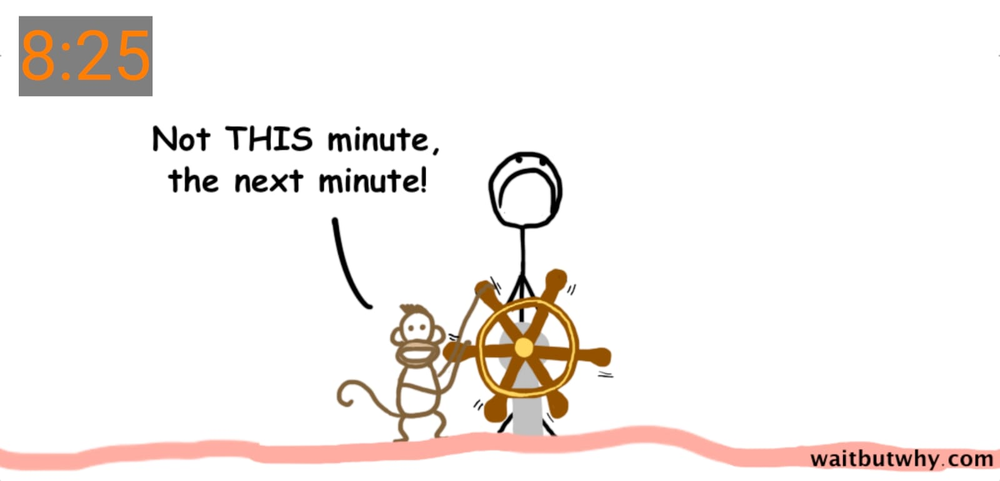
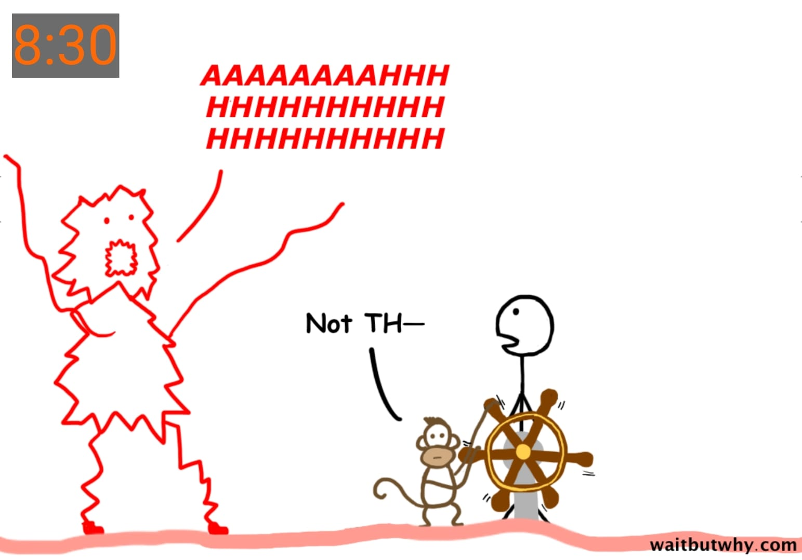
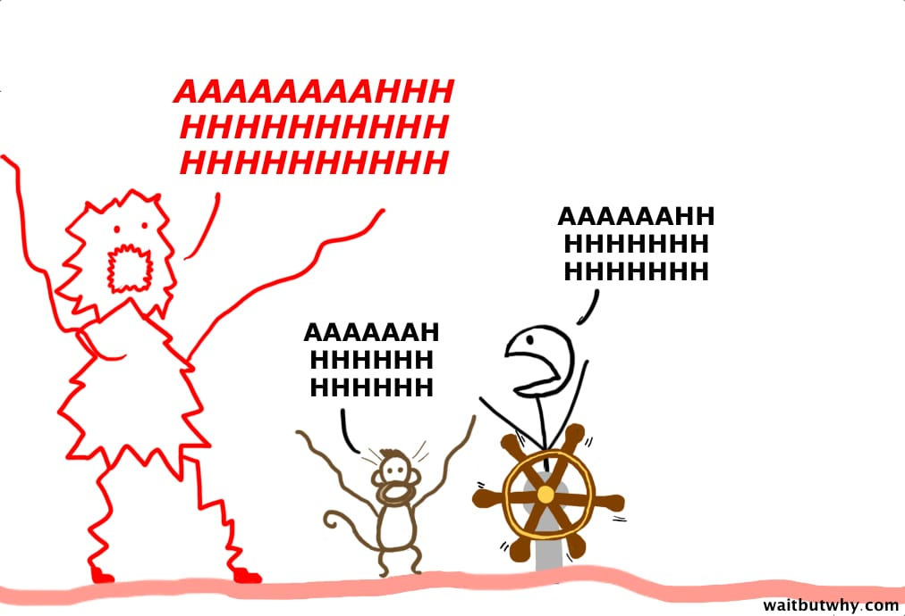
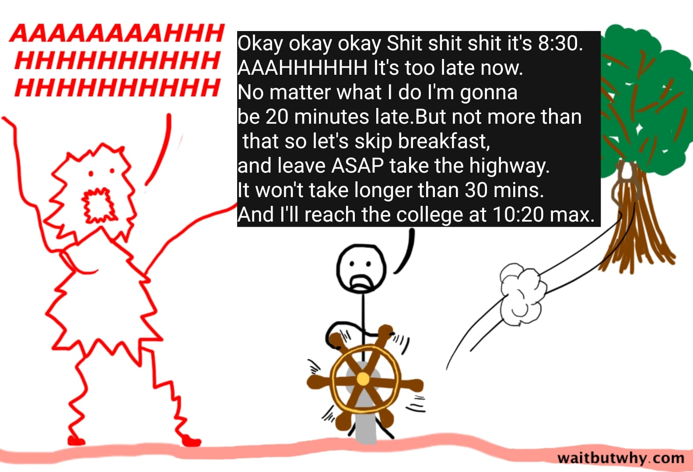

Why I'm Late Hamesha
📅 July 8, 2023
By Apoorva Jain
"Always late but worth the wait."
“optimistic-people-have-one-thing-in-common-always-late”
Nothing's better than the headline, “The reason people are [bad quality] is actually because they're [good quality].”
As I continued reading, it turns out that the Late people are actually the best people ever. They are optimistic and hopeful:
“People who are continuously late are actually just more optimistic. They believe they can fit more tasks into a limited amount of time more than other people and thrive when they're multitasking. Simply put, they're fundamentally hopeful.”
They're Big-thinking:
“People who are habitually late don't sweat over the small stuff, they concentrate on the big picture and see the future as full of infinite possibilities.”
Late people just get it:
“People with a tendency for tardiness like to stop and smell the roses…life was never meant to be planned down to the last detail. Remaining excessively attached to timetables signifies an inability to enjoy the moment.”
By the end of the article, I had never felt prouder to be a late person.
But also, what the heck is going on? I'm not late because I like to smell
the roses, or because I see the bigger picture,
or because the future is
full of infinite possibilities, or time is not real it is relative, or
blah blah blah and also I am not always late.

I'm late to college because I don't take it seriously.
So I thought and thought and thought and figured out, that there are two types of lateness:
- Okay Lateness: This is when the late person being late does not negatively impact anyone else—like being late to a party or a group hangout.Things can start on time and proceed as normal with or without the late person being there.
- Not Okay Lateness: This is when the late person being late does negatively impact others—like being late to a two-person dinner or meeting or anything else that simply can’t start until the late person arrives. Here the lateness has consequences.
And there are two types of people who are chronically not okay late:
-
Those who don't feel bad or wrong about it.
These people are idiots. They think they're a little more special than everyone else, like the zero-remorse narcissist at the top of the article. They're unappealing. -
Those who feel terrible and self-loathing about it.
These people have problems. Let call them CLIPs (Chronically Late Insane Person).While both groups of not okay late people end up regularly frustrating others,
a reliable way to identify a Group 2 CLIP is a bizarre compulsion to defeat themselves—some deep inner drive to inexplicably miss the first lecture,
feel stressed about rushing to college, crush their own reputation by standing in hallway until the class end, etc.
As much as they may hurt others, they usually hurt themselves even more.

Maybe I am a CLIP.
It's often the same story, something like this:
Let's say I have to reach the college at 10:00 AM.
When I lay out my schedule for the day, I'll have the perfect plan.
I'll leave early, arrive early, and get there around 9:50 AM (That's the best I can do).
That takes all the stress out of the situation,
It'll be great, I'll wake up early,
I'll leave the home by 9:05 and reach by college by 9:50 and I'll still have the minutes to spare.
All I have to do is to leave the home by 9:05 AM. To do that, I have to be up by 8:00,
so let's be safe and wakeup at 7:45 and leave the home by 9:05 or earlier, and I'm set.
What a plan.
Here's how it will play out:
Characters of the story:
| 1.The Panic Monter |  | 2. Instant Gratification Monkey |  | 3. Rational Decision Maker |  |
All these Characters are present inside my head.








CLIPs are strange people.I'm sure each CLIP is insane in their own special way,
and to understand how they work,
you'll usually have to get to some dark inner psychology.
I'm late because of the following traits maybe:
- I underestimate how long things takes. For me every thing seems like a 5 minute task.
But in reality it takes much longer than that.
All I remember is that one time when things went the quickest. And that time stays in my head rent-free as how long that task takes. -
I have a weird aversion to changing circumstances.
Like Newton said in his First Law of Motion
Every object will remain at rest or in uniform motion in a straight line unless compelled to change its state by the action of an external force.
For the CLIPs that external force is Panic Monster or Panic Attack.
So yeah, that's why I'm late—because I'm insane. Don't excuse the CLIPs in your life—it's not okay and they need to fix it—but remember, it's not about you. They have problems.
Thank You
P.S. I don't know why I write all this stuff. Anyways if you wanna ask me anything about this you can Contact me here.
Contact Me: here